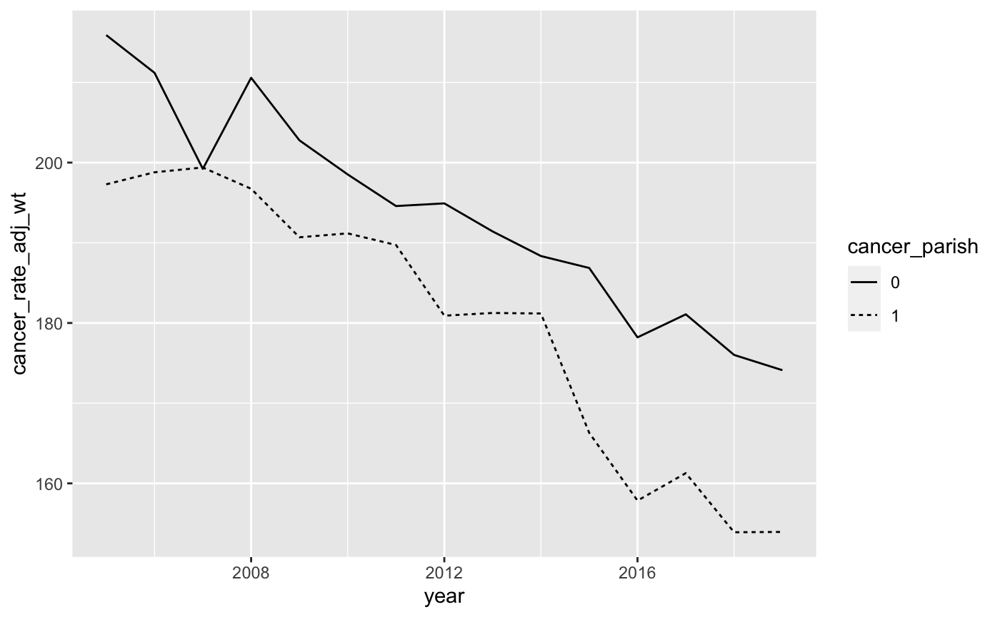
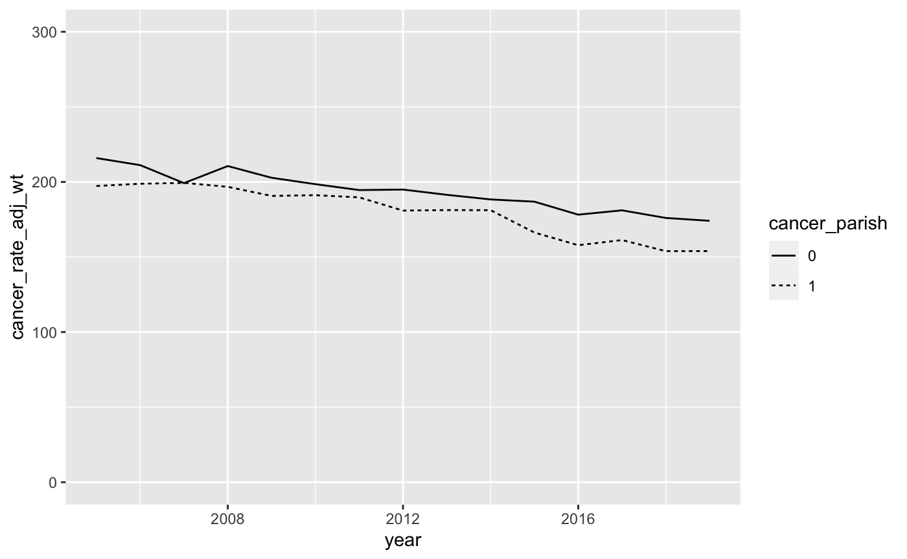
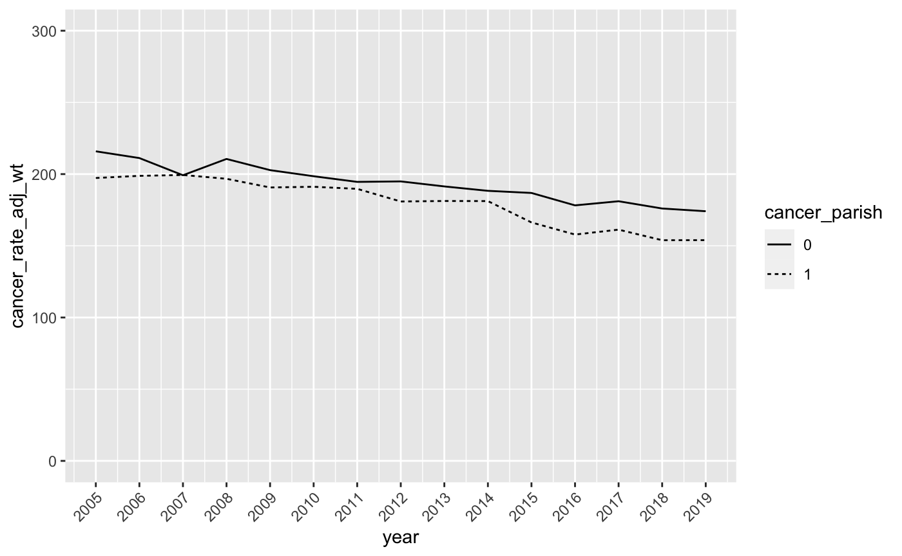
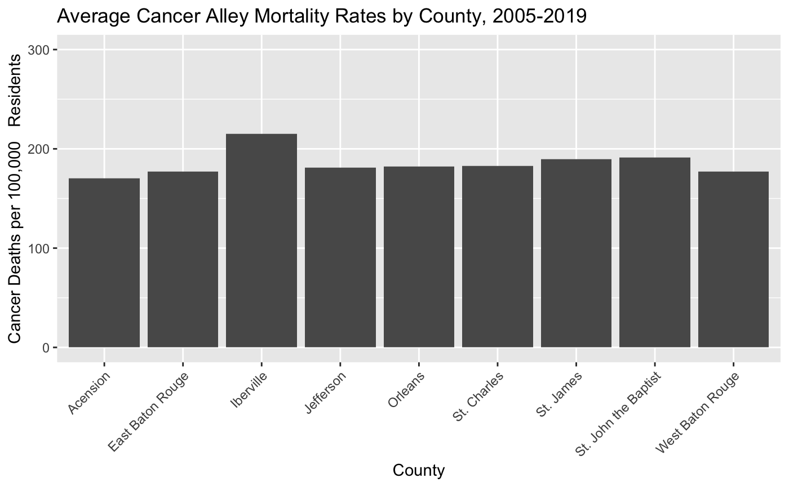

load("~/Dropbox/Documents/Teaching Materials/Health Policy/GitHub Site/hpam7660-sp24/assignments/data_4.RData")
library(dplyr)
library(knitr)
library(ggplot2)Data Assignment 4 - Data Visualization
I updated this assignment on March 2nd at 2pm. There is no need to redo the assignment if you completed it before the update.
Instructions
Complete the following assignment based on examples from ModernDive Chapter 2 - Data Visualization. We’re going to do something a little different with this homework assignment than we’ve done in the past. You are not going to create a new GitHub repo for this assignment. Instead, once you’ve completed this assignment, you’ll push it to your hpam7660_Cancer_Alley GitHub repo.
To get started, first open the .Rproj file in your hpam7660_Cancer_Alley folder. Then open a new Markdown document and give it a YAML header that includes the title “HPAM 7660 Data Assignment 4”, your name, the date, and “pdf_document” as the output format.
As you answer each of the following questions, be sure to include your R code and associated output in your Markdown document. Additionally, add a line or two describing what you’re doing in each code chunk.
Steps for Completing the Assignment
Describe the three essential components of data visualization. How are all three of these components incorporated in ModernDive Figure 2.1?
For this assignment, we’re going to use two data frames that we created during the last in-class tutorial. Those data frames were called
parish_ratesandcancer_alley_ratesunless you chose different names. Whenever we use pre-created data frames in a Markdown document, we need to account for a technical issue that arises due to the Markdown knitting process. When you knit a Markdown document in R, the knit is actually executed in a new environment. Since you didn’t create theparish_ratesorcancer_alley_ratesdata frames in this new environment, you’re likely to get an “object not found” error when you go to knit (this will happen even if those data frames are visible in your global environment). There are two solutions that we can use to get around this issue:We could include the code to create the
parish_ratesandcancer_alley_ratesdata frames from the tutorial directly into our Markdown document. This code will run in the new environment and the document should knit properly.We can use the
save.imagecommand in R to save the data frames in our global environment and then include R code in our Markdown document to load those saved data frames. For this solution, first make sure that theparish_ratesandcancer_alley_ratesdata frames are visible in your global environment. If there are other data frames in the global environment in addition to these two, you can either leave them there or you can remove them with therm(df)command where you replacedfwith the name of the data frame you’d like to remove. This is only really necessary if you want to limit the size of the file you’re about to save. Next, in the Console Window command line, typesave.image (file = "~/data_4.RData")where you should replace the “~” with the path that you’d like to use to save the data. Probably best to go with the path that points to yourhpam7660_Cancer_Alleyfolder to keep everything in the same place. Finally, when you write your first R code chunk for this assignment in Step 3, include the following commandload("~/data_4.RData")at the top. This will load the necessary data frames into the new environment and the document should knit properly. As an example, here’s the code I would put at the beginning of my Markdown document if I were completing this assignment:
If you decide to go this route, you should add data_4.RData to your .gitignore file. The data_4.RData file will be at least 20mb depending on what all data frames were loaded in your global environment when you saved it, and so pushing it to your GitHub repo may take take a while. Since there's no reason to actually push this file to your repo, you can avoid doing so by adding it to the .gitignore file. Use
ggplotfrom theggplot2package to create a scatterplot with county FIPS code on the x-axis and cancer mortality rates in 2019 on the y-axis using theparish_ratesdata frame. Remember that in theparish_ratesdata frame, county is calledcntyrsdand the cancer mortality rate iscancer_rate_adj. And since that data frame includes multiple years of data, you’ll first need to restrict the year to 2019.Now create a linegraph that displays cancer mortality rates from 2005 through 2019 for both Cancer Alley parishes and the non-Cancer Alley parishes in Louisiana. To do so, you’ll need to use the
cancer_alley_ratesdata frame we created during the last in-class tutorial that aggregated mortality rates into two groups: Cancer Alley parishes and non-Cancer Alley parishes. Remember that in thecancer_alley_ratesdata frame, the Cancer Alley parish identifier is calledcancer_parishand is equal to 1 for Cancer Alley parishes and is equal to 0 for non-Cancer Alley parishes. The age-adjusted, population weighted cancer mortality rate is calledcancer_rate_adj_wt.
There’s a good chance that you’ll run into the following error if you follow the example code in the ModernDive chapter:
Error in `geom_line()`:
! Problem while computing aesthetics.
ℹ Error occurred in the 1st layer.
Caused by error in `scale_f()`:
! A continuous variable cannot be mapped to the linetype aesthetic
ℹ choose a different aesthetic or use `scale_linetype_binned()`This error happens because R thinks that the variable cancer_parish is a continuous variable rather than an indicator for whether a specific parish is in Cancer Alley. We need to tell R that the cancer_parish variable is an indicator rather than a continuous variable and we can do that by running the following line of code where df represents whatever name you gave to the data frame that will be used to create the linegraph (this may be cancer_alley_rates or it may be another name if you’ve already created a new data frame from cancer_alley_rates):
df$cancer_parish <- factor(df$cancer_parish)This code tells R that the variable cancer_parish in the df data frame should be interpreted as a factor variable. Once we run this code, we should avoid triggering the error code above.
Your graph should look like the graph below:

- We can use the
scale_y_continuousoption to change the y-axis values. Let’s change the y-axis scale so that it ranges from 0 to 300. The code to do so isscale_y_continuous(limits = c(0, 300)). This tells R that the y-axis scale is continuous and it ranges from a low of 0 to a high of 300. Remember that each time you add an option to yourggplotcommand, you’ll want to add a+sign before the new option. Your graph should now look like this:

- This is looking better, but let’s make a few more adjustments. First, let’s fix the values on the x-axis so that it displays all the years in our data. This is similar to the way we changed the y-axis values in the last step with one slight difference. We want to make sure R includes all values of year between 2005 and 2019, so we use the following
ggplotoptionscale_x_continuous(breaks = seq(2005, 2019, by = 1)).
This tells R that the x-axis scale is continuous and it contains sequential values of year from 2005 through 2019. Because we’re dealing with a lot of years on the x-axis, the values are going to get crowded. To alleviate that crowding, we can use the theme option to tell R to rotate the year labels by 45 degrees. The full scale_x_continuous and theme code is as follows:
scale_x_continuous(breaks = seq(2005, 2019, by = 1)) +
theme(axis.text.x = element_text(angle = 45, hjust = 1)) Here, the theme option is telling R to rotate the x-axis labels by 45 degrees and adjust the horizontal alignment so that the labels don’t overlap. To see what I mean, you can drop the theme option and you’ll end up with a jumbled x-axis.
Your modified graph should look like this:

- Now let’s change the legend so that it clearly indicates which line represents the Cancer Alley parishes. Here, we’ll use the
scale_linetype_discreteoption with the following arguments:
scale_linetype_discrete(name = NULL, labels = c("Rest of Louisiana","Cancer Alley"), guide = guide_legend(reverse = TRUE)) This tells R that we want to remove the legend title, label the lines “Rest of Louisiana” and “Cancer Alley”, and then switch their ordering in the legend so that “Cancer Alley” comes first. Add this to your ggplot command to produce a graph that looks like this:
- Finally, let’s title the chart “Cancer Mortality Rate Comparison”, title the y-axis “Cancer Deaths per 100,000 Residents”, and remove the x-axis title since it’s obvious the x-axis scale is in years. We can do this with the
labsoption as follows:
labs(title = "Cancer Mortality Rate Comparison", y = "Cancer Deaths per 100,000 Residents", x = NULL) And the output should look like this:
Now we have a pretty good linegraph of cancer rates over time for Cancer Alley and non-Cancer Alley parishes in Louisiana. Perhaps surprisingly, cancer mortality rates are higher in non-Cancer Alley parishes. However, we want to be careful drawing any firm conclusions from this chart since we’re still going to make a few more adjustments to the data at a later date.
It turns out that the NIH and CDC have collected data on age-adjusted cancer rates over time for all states. Take a look at this chart for Louisiana and, despite the fact that it’s not broken out by Cancer Alley parishes, you’ll see that our linegraph looks very similar to this one from 2005 through 2019. There’s been a pretty clear decline in cancer mortality in Louisiana over the past 20 plus years and our linegraph indicates that this decline has occurred for both residents of Cancer Alley and non-Cancer Alley parishes.
- Before we finish, let’s look at one more commonly used data visualization - the barchart. We’ll use the barchart to visualize differences in cancer mortality rates across Cancer Alley parishes. First, create a barchart that plots average cancer mortality rates for Cancer Alley parishes (and only Cancer Alley Parishes) between 2005 and 2019. To be clear, you’ll have one value for each Cancer Alley parish and that value will be the average of the annual cancer mortality rates between 2005 and 2019.
You’ll also need to tell R that county should be treated as a factor variable and not a continuous variable (just like we did with cancer_parish above). Otherwise, you’ll get all values between 0 and 125 on the x-axis, which will create a bunch of empty space. To tell R that county should be treated as a factor variable, you can use this line of code df$county <- factor(df$county) where the df represents whatever name you gave to the data frame that will be used to create the barchart. Your barchart should look like this:
- Now let’s clean up this barchart the way we did with the linegraph. Change the y-scale so that it ranges from 0 to 300, re-title the y-axis “Cancer Deaths per 100,000 Residents” and the x-axis “County”, and give the chart the title “Average Cancer Alley Mortality Rates by County, 2005-2019”. Your modified barchart should look like this:
- This looks good, but it would be more helpful if the x-axis labels were the parish names instead of the parish FIPS codes. Add the following option to make this change:
scale_x_discrete(labels = c("5" = "Acension",
"33" = "East Baton Rouge",
"47" = "Iberville",
"51" = "Jefferson",
"71" = "Orleans",
"89" = "St. Charles",
"93" = "St. James",
"95" = "St. John the Baptist",
"121" = "West Baton Rouge")) +
theme(axis.text.x = element_text(angle = 45, hjust = 1)) This code does two things. First, it tells R to replace the county FIPS code labels with parish names on the x-axis. Second it tells R to rotate these x-axis labels by 45 degrees and adjust the horizontal alignment so that the names don’t overlap. Your barchart should now look like this:

- Once you’ve finished Step 11, knit your PDF document and push it to your GitHub repo. Make sure the document shows up in the repo, invite me to the repo, and you’re done!